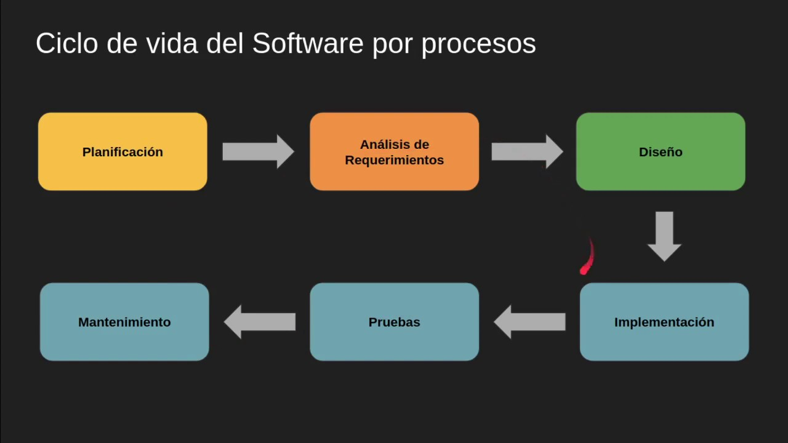

Software Life Cycle, Stages, Breakdown.Static Tests and Dynamic Tests.
TOPIC 4
Eder Geovanni Ramirez Corona
Dynamic Software Testing
What is dynamic testing?
Dynamic testing, in which I have to run the software in order to test it,
aims to ensure that the software behaves according to the business requirements by
performing functional and non-functional tests.
Dynamic Functional Tests
What is it?
Functional testing is performed to check business-critical features, functionality and usability, ensuring that the software features and
functionalities be have as expected without any problems.
Smoke Testing
Smoke tests are those that aim to evaluate the quality of a software just before
it is delivered to verify with more complex tests.
Sanity Testing
A type of software testing that is performed after receiving a build containing minor changes to code or functionality,
the objective is to verify that the proposed functionality works as expected.
Regression testing
A type of test performed to confirm that a recent
change has not adversely affected the existing characteristics of a system
Regression testing
A type of test performed to confirm that a recent
change has not adversely affected the existing characteristics of a system
Component or Unit Tests
These tests focus on components, units or modules,
i.e. the smallest elements of the software.

Integration Testing
Integration testing involves testing different
modules of a software application as a group.
A software application is composed of different sub-modules
that work together for different functionalities.